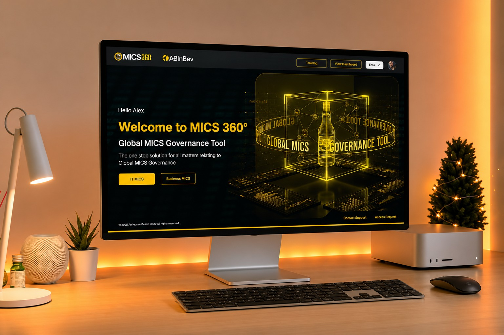
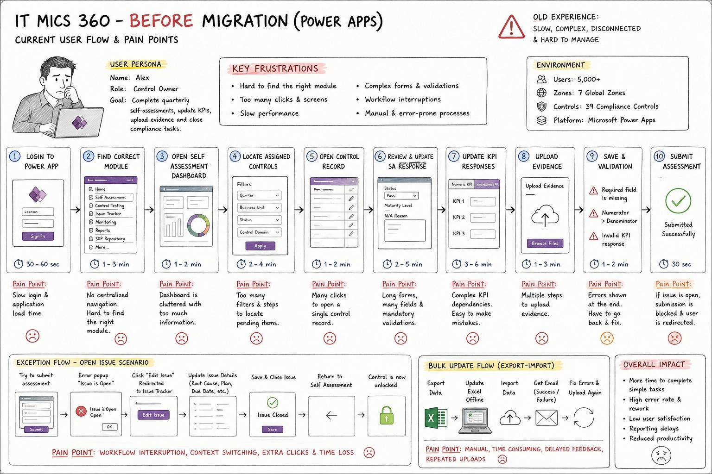
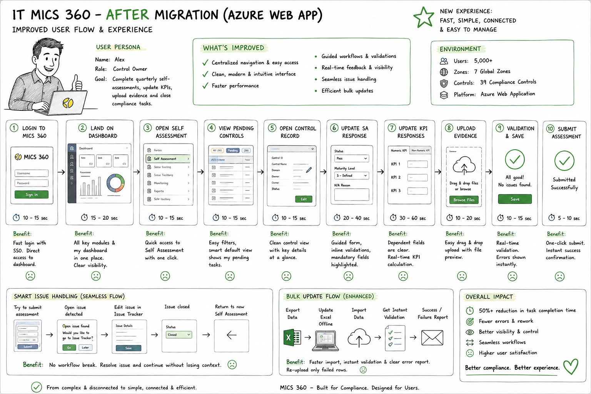
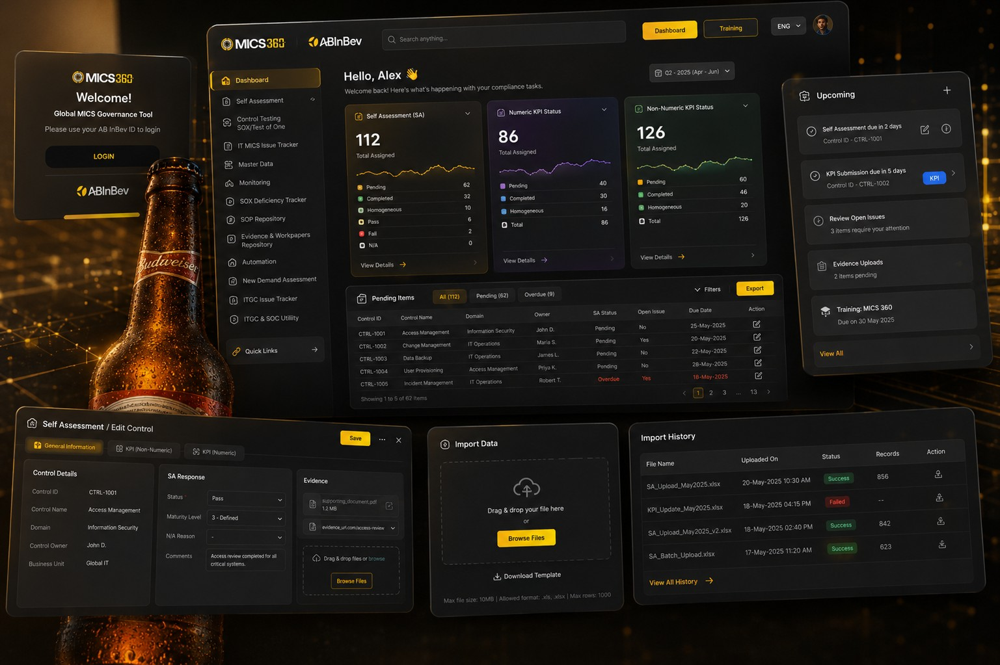

MICS 360 is the tool thousands of people at AB InBev use every quarter to run compliance checks. I helped move it off an aging Power Apps setup and onto a proper web app, without breaking the governance it exists to protect.

MICS 360 runs the internal control checks that keep AB InBev compliant across its global operations. Twelve separate tools for things like self assessment, control testing, and issue tracking, used by five thousand people across seven zones, all built on Power Apps.
The problem was never what the platform did. It was how long everything took to do. Logging in was slow. Finding the right module meant hunting through a menu. Forms held their errors until the very end, so a small mistake could cost someone several minutes of redone work.
Most people on the platform fall into one of three roles. A Control Owner completes the self assessment for their area. A Tester checks that controls are actually working. A Reviewer signs off. All three needed the same thing done faster: log in, find their pending work, complete it, and trust that the system caught their mistakes before submission, not after.
I kept a simple picture of a Control Owner in mind while designing, someone with a quarterly self assessment to finish, KPIs to update, and evidence to upload, on top of their actual job.
Self assessment is the most used workflow on the platform, so it is the one I mapped in full. Both versions below cover the same journey: log in, find the assessment, update every KPI, attach evidence, and submit. Nothing about what the job requires changed. Almost everything about how long it took did.


Login dropped from around a minute to about fifteen seconds. Finding the right module went from a few minutes of hunting to a single click. Nothing on this list was a small tweak. Each one came from watching where a Control Owner actually lost time.
People used to open several disconnected tools to do related work. Everything now sits behind a single homepage, with direct links into every module, so getting to the right place stopped being a task of its own.
A control record used to be one long page holding general details, KPI numbers, and evidence all at once. I split it into tabs, so a person only sees the part of the record they are working on at that moment.
The old system waited until submission to flag a missing field or a broken KPI dependency. The new one checks as you go, right where you are working, so a mistake gets fixed in seconds instead of discovered five steps later.
Some teams manage hundreds of records at once. Editing them one at a time in a form was never realistic. The new flow lets people export data, edit it offline, and re-upload it, with only the rows that failed coming back for a fix.
A quick look at the everyday screens: signing in, the dashboard someone lands on, the self assessment workspace with its tabs, and the bulk import and history views for teams handling larger volumes.

Self assessment is the one most people touch every quarter, but the platform covers the full spread of compliance work. All twelve now live behind the same navigation, shared by Control Owners, Testers, and Reviewers alike.
The goal was never speed for its own sake. It was giving five thousand people their time back on a task they have to do whether they like it or not, while keeping every one of the thirty nine controls exactly as strict as compliance requires.
Gathered during UAT and design reviews. Names are left out, roles are not.
"The new platform finally feels like one place. Finding my pending controls used to take minutes. Now it is the first thing I see."
"Inline validation changed everything. We catch issues while typing instead of at submission, so there is a lot less rework."
"The design kept our business rules intact while making the day to day work much simpler. Adoption went smoother than we expected."
"Bulk import with instant feedback saved us hours each cycle. Only the failed rows come back. No more guessing which ones broke."
Business rules, how people would adopt it, and keeping the service running through the switch mattered as much as any screen I drew.
People adapt to a new layout faster than they adapt to new terms for things they already know. I kept the language people already used, even when a cleaner term existed.
Validation at the point of interaction stopped more mistakes than validation that blocks submission ever did.
Planning for bulk workflows and larger data volumes from the start avoided a late, painful patch once real usage arrived.